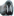

Master index
Master index
| Master index |
Index for eidors\examples |
|  cheating_2d | code to simulate inverse crimes in EIT |
| compare_2d_algs | Compare different 2D reconstructions |
| compare_3d_algs | Compare different 3D reconstructions |
| demo_2d_simdata | Example of using EIDORS to simulate 2D data and to |
| demo_3d_simdata | How to make simulation data using EIDORS3D |
| demo_complex | This demo function shows how the EIT problem can be formulated in a complex |
| demo_real | [inhomg_img, demo_img] = demo_real; |
| eidors2d_demo1 | EidorsDemo1 Demonstrates the use of 2D EIT Package with linear basis |
| image_2d_algs | Based on the 'bubble' data from Eidors2D, use several |
| manchester_tomography | Example to show reconstructions from |
| moving_tank_objs | MOVING_TANK_OBJS: create movies of objects moving in tanks |
| object_in_tank_2d | 2D demo example for reconstruction of object floating inside tank with |
| resistor_model | DEMO to show really simple application of EIDORS framework |